关键词：
- 广州大学
- MFC程序设计
- 学生管理系统
由于本人非常地懒，不会回答大家的问题，遇到问题请百度谷歌解决吧。
环境
- 操作系统： Windows 10 家庭中文版
- 编写软件： Visual Studio 2017
- 预编译头： 除了原有自带的，添加了_CRT_SECURE_NO_WARNINGS。
课程设计题目及内容
- 设计一个学生类Student，包括数据成员：姓名、学号、二门课程(面向对象程序设计、高等数学)的成绩。
- 创建一个管理学生的类Management，包括实现学生的数据的增加、删除、修改、按课程成绩排序、保存学生数据到文件及加载文件中的数据等功能。
- 创建一个基于对话框的MFC应用程序，程序窗口的标题上有你姓名、学号和应用程序名称。使用（1）和（2）中的类，实现对学生信息和成绩的输入和管理。
- 创建一个单文档的MFC应用程序，读取（3）中保存的文件中的学生成绩，分别用直方图和折线方式显示所有学生某课程的成绩分布图。
程序功能模块的设计
用户层面
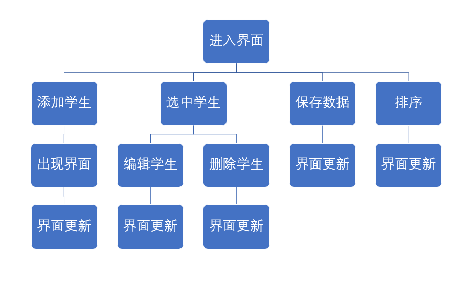
底层
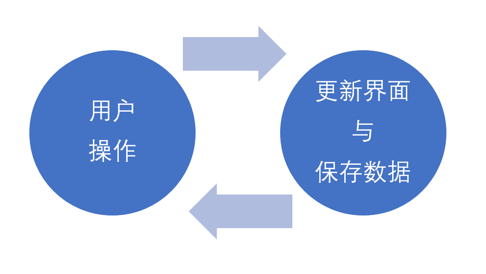
只要用户更新了数据，就保存数据到tmp.csv中。
只有用户点击了保存按钮，才会保存到data.csv中。
文件
- main
|– Manager.exe
|– Document.exe
|– data.csv
|– tmp.csv
|– README.txt
- Manager.exe和Document.exe是两个程序的入口，分别是学生管理和可视化文档。
- data.csv存放数据，仅支持utf-8编码。
- tmp.csv存放临时数据。
关键源程序
Manager 对话框
底层 (base.h)
1 |
|
主窗口 (CManagerDlg)
m_list初始化
1 | // m_list初始化 |
获取数据的路径以及数据的读取
放在初始化的代码中
1 | // get source path |
禁止拖动表头
1 | void CManagerDlg::OnBegintrackList1(NMHDR *pNMHDR, LRESULT *pResult) |
添加数据
1 | //add |
修改数据
1 | //chg |
删除数据
1 | //del |
保存数据
1 | //save |
点击表头进行排序
1 | //sort |
添加学生对话框 (CAddDlg)
初始化
1 | BOOL CAddDlg::OnInitDialog() { |
点击确认时代码
1 | void CAddDlg::OnBnClickedOk() |
修改学生对话框 (CChgDlg)
初始化
1 | BOOL CChgDlg::OnInitDialog() { |
点击确认时代码
1 | void CChgDlg::OnBnClickedOk() |
Manager.h 中的“全局”变量
1 | Management manager; |
Document 单文档
底层 (bash.h)
与Manager中大致相同。
1 |
|
视图类头文件 (ChildView.h)
1 |
|
视图类源文件 (ChildView.cpp)
消息注册
1 | BEGIN_MESSAGE_MAP(CChildView, CWnd) |
创建文档时代码（初始化）
创建按钮
1 | // create |
获取数据并存储数据
1 | // get source path |
点击按钮时的操作
1 | void CChildView::PRINTOOPA() |
绘制直方图
1 | void CChildView::histogram(CDC * pDC, const int *score, int n) |
绘制折线图
1 | void CChildView::listChart(CDC* pDC, const int* score, int n)//折线图 |
运行时效果图
刚打开时默认是按照学号进行排序的。（字典序排序）
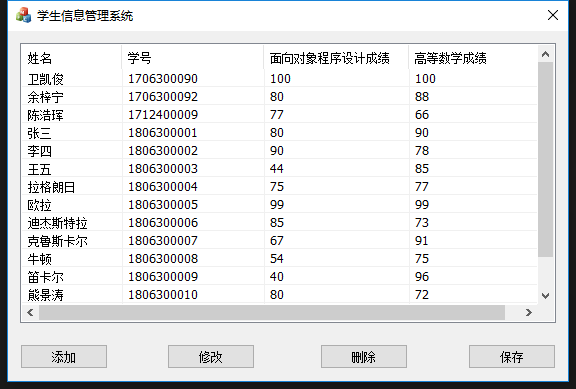
点击表头可以进行排序。例如此时我点击姓名的表头。
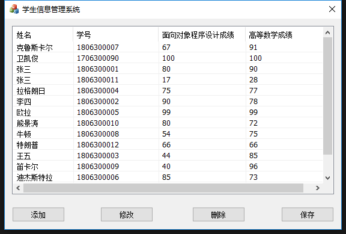
此时是按照内部的utf8编码进行字典序排序。
再点一下就变成倒序。
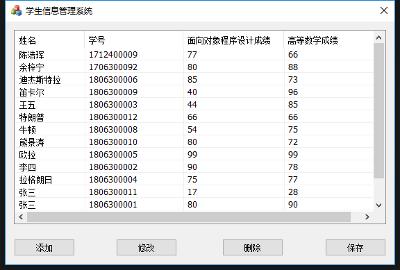
点击面向对象程序设计成绩的表头，则会按照面向对象程序设计成绩进行排序。
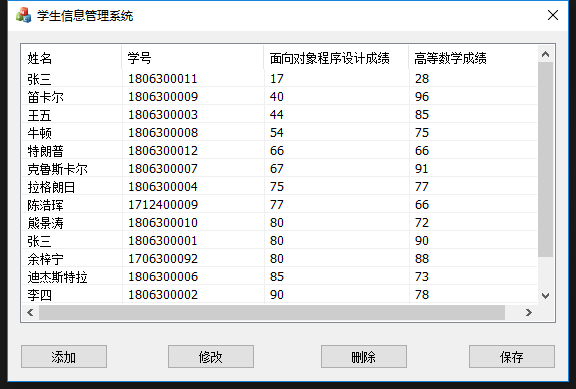
而高等数学成绩也是一样。
点击添加按钮，弹出一个对话框。默认有一些参数。
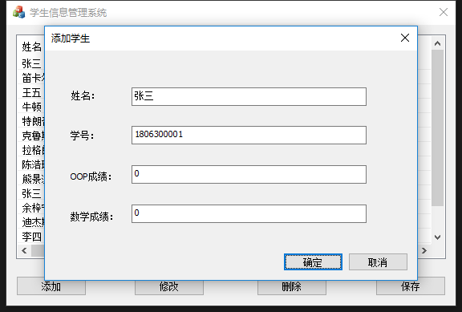
添加的数据学号不能重复，否则会弹出一个MessageBox表示不能添加。
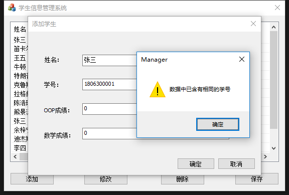
添加成功后会在最后加入一行数据。
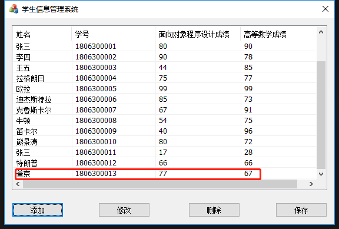
红色框即刚才添加的数据。
修改学生或删除学生时时需要选中一名学生，否则会出现以下情况。
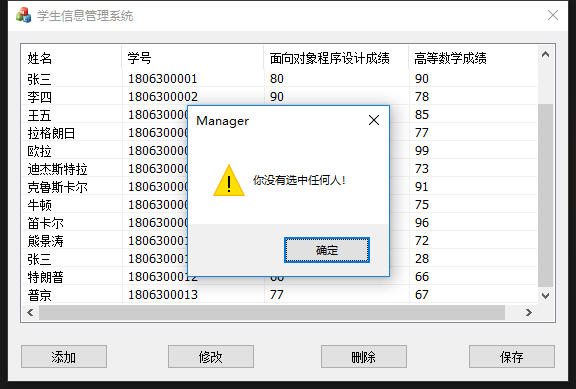
假如此时我要删除学生“李四”，需要选中“李四”，再点击删除。
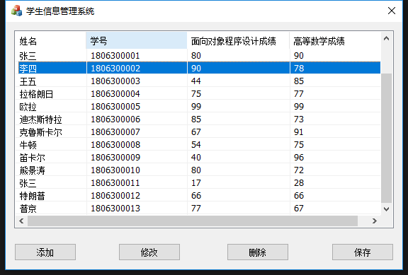
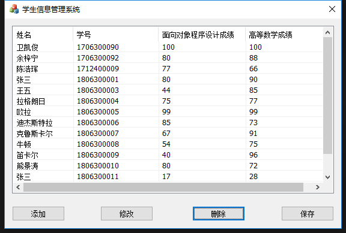
如果要修改学生“王五”，则要选中“王五”，然后点击修改。
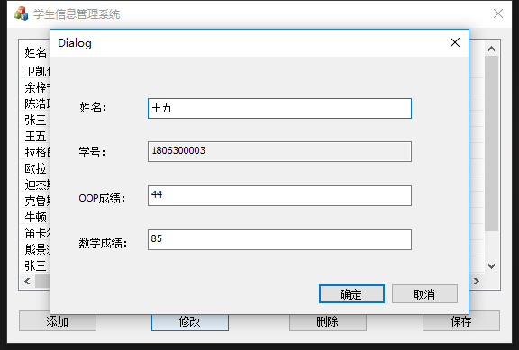
可以修改该学生的姓名、OOP成绩与数学成绩，但不可以修改学号（edit控件锁定）。保证学号的唯一性。这里我们修改“王五”的数学成绩为74。
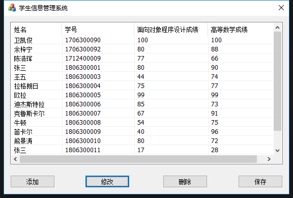
点击确定，这时“王五”的数学成绩改为了74。
点击保存，弹出一个MessageBox，表示保存成功。
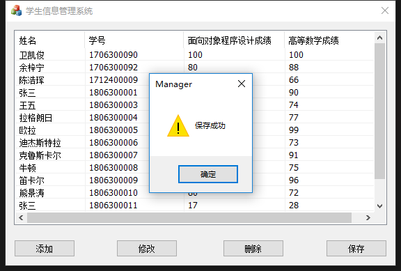
关闭学生信息管理系统。打开Document.exe。
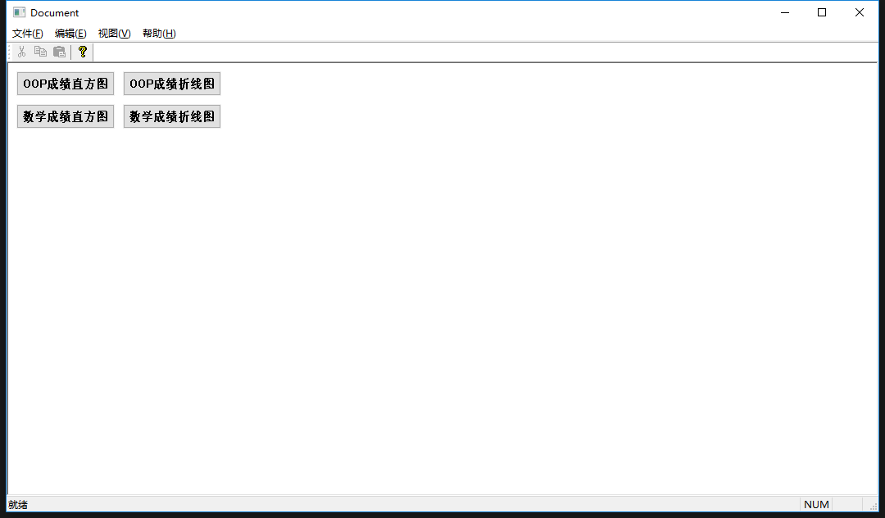
点击按钮就可以直方图和折线图的查看了。
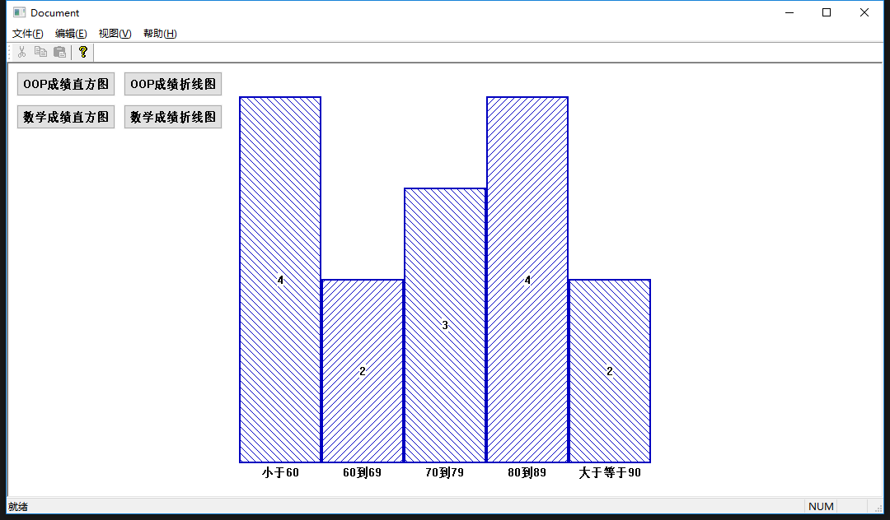
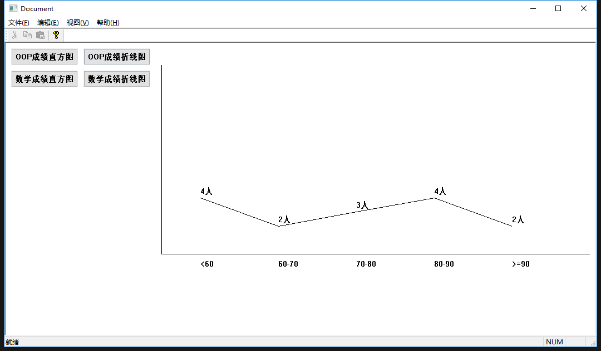
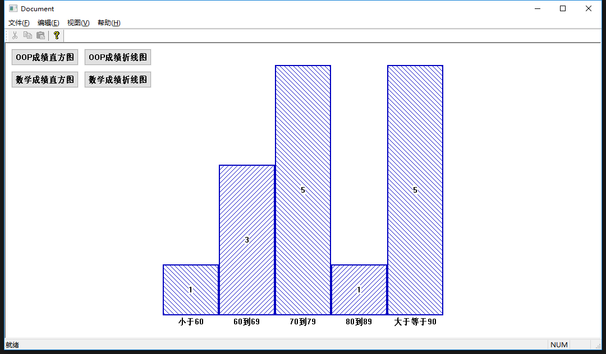
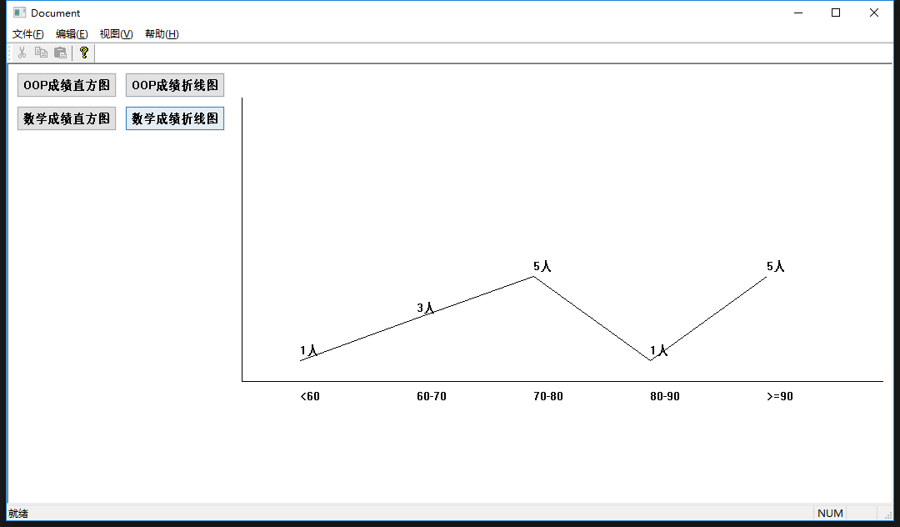
实验结果分析
- 功能：完全做出预定功能，例如学生添加、修改、删除等操作以及单文档显示都可以做到。
- 用户体验：从用户体验出发而设计窗口，用户一打开应用程序，就自动读取了数据，用户相当于数据库的操作者，但并非使用数据库的语言，而是可视化的窗口，而且可视化的体验会相当好。
- 实现意义：可以可视化地处理数据，并且考虑到了学号是不应该改变的，而且许多操作可以基于学号不可相同性，这就代表了一个学号最多对应一位学生，利用学生进行映射。而学生的姓名是有可能相同的，利用姓名进行操作是不可取的。
实验体会
写底层时的体会
- 一个Management类中有很多个Student类对象，它们不是继承的关系，而是包含的关系。
- 在编写这两个类之前，首先最好把这两个类的功能、接口想清楚，再进行编写，这样编写的代码bug少，而且编写代码的时间也会更短。而不是盲目的写。（像是Management类的成员函数中又定义了一个Mangement类对象的操作是不能理解的）
- 编写文件输入和文件输出的时候，需要注意编码问题，若是不使用wchar_t，或者不统一编码，则很可能会导致乱码的情况发生。同时文件的格式要统一。比如我是使用的是csv文件的逗号分隔符文件，编写简单，但安全性欠佳。若是正常非实验使用的应用程序，需要封装成其他安全的文件格式，并且需要进行加密（哪怕是最简单的base64加密）。
写对话框时的体会
- 预先理清楚架构，想好需要处理哪些功能，创建好对话框，组织好对话框，再编写代码，这样会更清楚地知道该如何编写。
- 每一个对话框用的不是同样的数据，就是说每两个对话框都是独立的。但如果需要进行对话框之间的变量交互，可以通过一个对话框们都能访问到的一个app对象，即AfxGetApp()的返回值。将需要共享的变量放在Manager.h中，传值的时候就可以通过这个app对象实现。
- MFC的功能非常多，如果你想实现一个功能，但又不知道怎么用什么接口去实现这个功能，这个时候最好是寻找官方文档，查询这些功能的接口，或者利用搜索引擎寻求帮助。
- 需要实现的功能非常多。耐心是非常重要的，一步一步地来，最后总能做到想要的功能和达到想要的效果。
- Visual Studio 可以帮你生成许多代码，如果你需要生成一个对话框，只需要动几下鼠标和键盘就可以实现的。有许多东西都可以自动生成，而无需自己跑到在头文件中添加某个函数，然后又再cpp文件中又再写一次。如果全部代码都是自己写的，那么你学的其实只是普通VC++而不是MFC。
写单文档时的体会
- 和对话框一样，许多代码是自动生成的，完全没要必要自己写。自动生成可以加快编写代码的时间。
- 单文档应该和对话框共享一个data.csv文件，这样在manager类中产生的数据可以直接被单文档所享用。
- 写单文档时也需要有耐心，从官方文档中查询功能的接口，并慢慢实现，一步一步构建代码。
缺点
- 不可以对学生进行分开管理。
- 代码重构将非常复杂。
- …